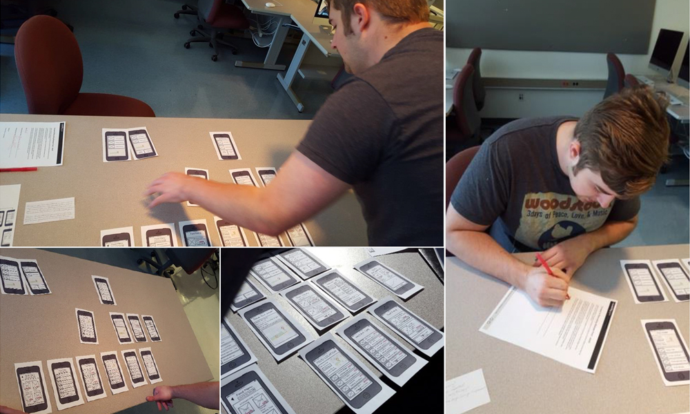

"CampusNosh" is a food ordering application that connects on-campus food stalls, restaurants, and some off-campus F&B providers. With this app, student could get food more quickly and easily within their budgets.
Through ethnographic studies, observations, an online questionnaire and interviews of campus students regarding food procurement, our team* noticed there was a stong need for the food ordering and dilivering service for campus students.
The key features of the app includes:
*Team Member:Shanglei Zhang, Michele Walker, Onkar Borgaonkar

Click to download the full version of the Campus Nosh Final Report.
Campus Nosh ReportIn order to understand students' satisfaction level of the on-campus food services, their opinion of food variety and options, and their dining on campus solutions, we conducted observations and interviews in a few places most common to students during lunch hours.
We also took into account a few food provisions not used by the students and those sites include “The Den” café on IU East campus (Richmond, IN) , the “Einstein Bros Bagel”, the corridor with a vending machine & “Brewfus” coffee bar on IU East campus (Richmond, IN).
“Einstein Bros Bagels” at IT Building First Floor
“The Den” café on IU East campus (Richmond, IN)
“Brewfus” coffee bar on IU East campus (Richmond, IN)
As a prerequisite to problem positioning of the theme “Food Habits of College Students”, we interviewed 9 students studying at IU East and IUPUI, with a wide range from freshman to 3rd year graduate. Each participant took ten to twenty minutes to finish a structured interview.
Here are some quotes from the participants:
“I prefer going home for lunch and returning back. It takes me almost the same time as standing in this queue.”
“If I bring my own food, I just like to have my food at my desk (Grad Studio@IT). Because it helps me reduce time, I can work while eat.”
“I would like to use that facility in case I have to stay back in my department for long hours.”
“The coffee shop is more convenient and quick, and I like the atmosphere.”
Based on the information collected from interviews and observations, we built user scenarios and personas to focus on the major needs of the key user group.
To make sense of the data colldected from the user review and reflect them in the design process, we categorized problems, mapped out food related issues faced by the college student, brainstormed ideas and created several story boards.
Affinity diagram
An affinity diagram was representation and clustering of data, cognitive diagram is about making sense and decisions, i.e. thoughts process and experience of users.
Cognitive Mapping
Cognitive mapping helped us focus attention to the areas which seemed to be unrelated but are the most common issues faced by the majority of college students.
Brainstorming Ideas
Our team brainstormed several times and came up with 30 ideas. We picked 3 design alternatives to develop:
Storyboards
Several storyboards were used to discuss the potential solutions. Storyboards helped us to focus on people and their goals, and also offered a quick way to get feedback on which ideas resonate with the users.
Low fidelity paper prototyping was used for the early design stage, as it allowed us to rapidly prototype, make changes easily, and work collaboratively. It allowed us to get a clear idea about the solidness of our design before moving into the high fidelity phase.
Site Map of “Campus Nosh” App
Paper Prototype
Photos of Paper Prototyping Testing
Paper prototype provided a rapid, cheap way for UX development. We built several prototypes in Balsamiq and then printed out for rapid evaluation.
Due to the limited time of this project, we adapted Think Aloud Protocol for a cognitive walkthrough, using the paper prototype we created. A cognitive walkthrough is a usability inspection method with an emphasis on analyzing how a user would go about completing common tasks.
Once the goals and list of actions are defined the reviewers work together to talk through the story constantly asking four basic questions (Wharton et al, 1994):
There are two phases of the cognitive walkthrough:
The first phase involved the identification of the input conditions, which include a series of
sequential actions for a task and the description of the app’s responses for each action.
The second phase, we analyzed the user actions and the obstructions/confusions they had during the walkthrough. The severity of problems and suggestions for the design were are also provided.
During the walkthrough, users were asked to think aloud as they work on the tasks/actions using the paper prototype app. We video recorded the whole process and took notes during each testing session.
The exercise allowed us to assess the app design and find some confusing issues that could be improved. Based on user preference, we also nailed down the home screen design from 3 options.
User likes:
User's suggestions: